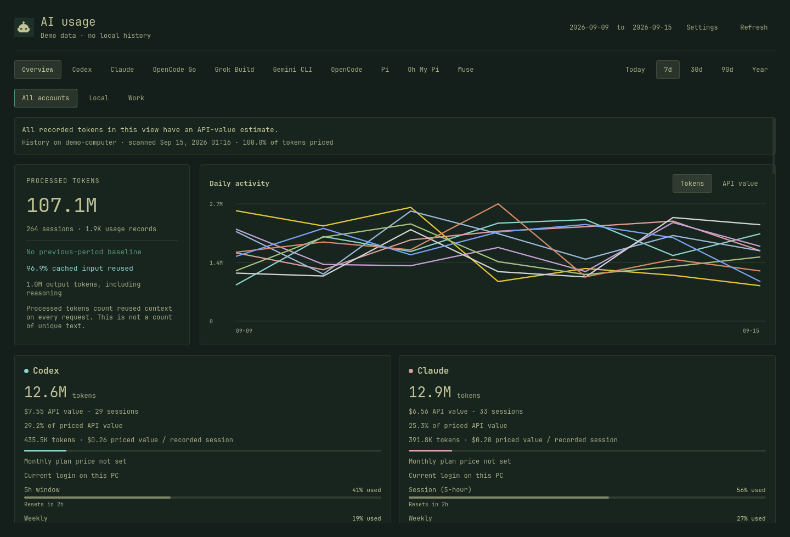
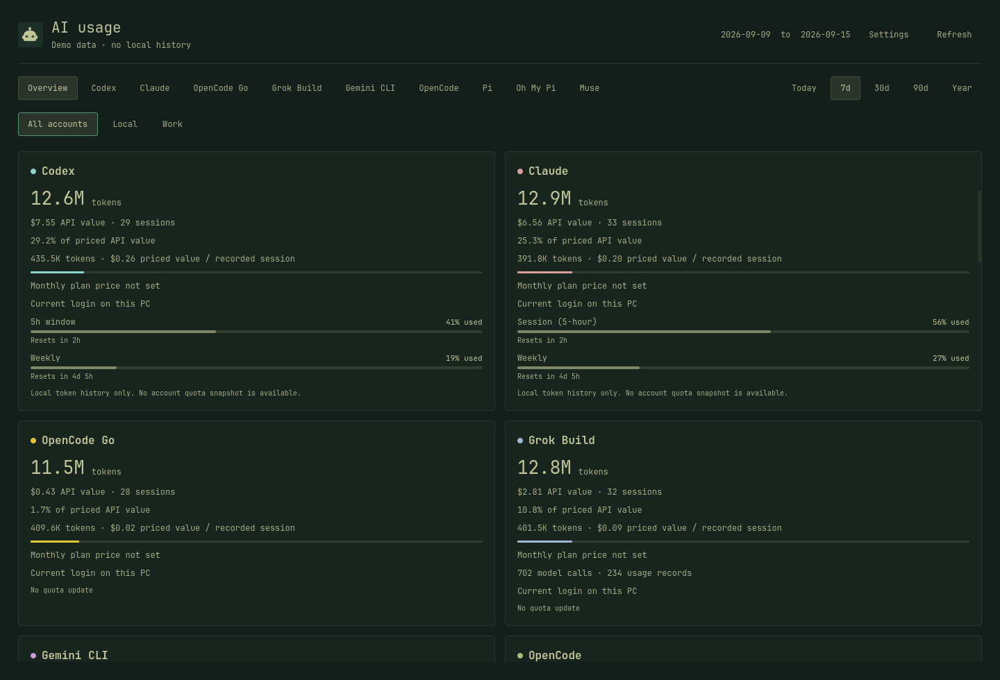
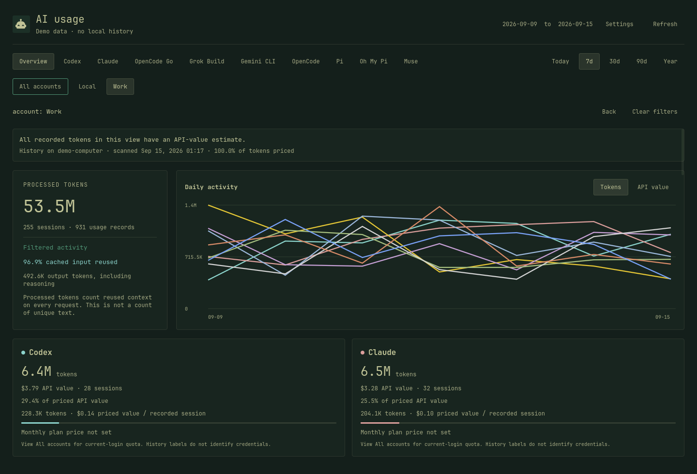
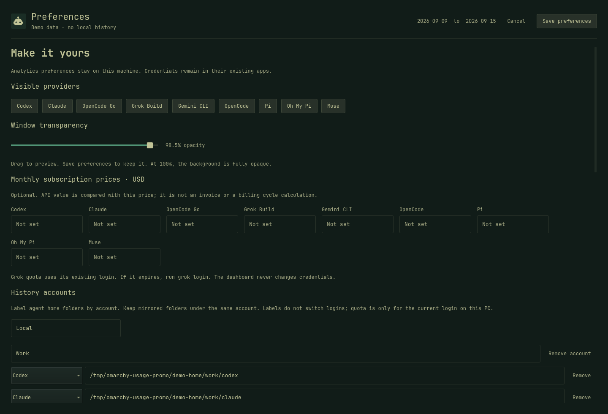

Omarchy · local metrics
A local ledger for the coding agents on this PC. Processed tokens, API-value estimates, and the current login’s quota. Nothing is uploaded.
Recorded from python3 demo.py on an isolated bench, 15 Sep 2026. Narration: Lucas Oliveira, OmniVoice official profile. Screenshots use generated demo data, same as the README.
Today, 7 / 30 / 90 day, and yearly views. Input, output, cache, and estimated API value. Sources appear when they have history.
Label folders as Local or Work. Copied sessions count once. Conflicting labels are flagged. Labels are not logins.
Limits and recent tokens in the Omarchy bar. Open analytics from the panel or the application menu. Same dashboard either way.
The installer copies the app into your home directory. It never writes to /usr/share/omarchy and does not need sudo.
Codex, Claude, Grok Build, Gemini CLI, OpenCode, Pi, Oh My Pi, and Muse folders already on disk.
Counters, model names, project paths, session IDs, timestamps. Conversation bodies and credentials stay in their apps.
Catalog rates or the app’s recorded estimate. Missing prices stay marked unpriced. This is not your bill.
History every 15 minutes, plus OpenCode Go and enabled Grok quota. Manual Refresh also asks Omarchy for Codex and Claude limits.
Every still is the real Quickshell UI, captured from the demo instance. The subtitle in the window says so.
Processed tokens for the selected period, with a daily (or hourly) chart per provider. Cache reuse is counted on every request. That is not unique text.

Each source shows tokens, API-value share, sessions, and the current login’s quota on this PC. Account-filtered views hide quota on purpose.

Work versus Local in the demo: 53.5M tokens on Work against 107.1M on all accounts. Folders must already be mounted. The dashboard does not sync another machine.

Enable providers, set optional monthly plan prices, and point at extra history folders. Credentials stay in Codex, Claude, Grok, Muse, and OpenCode.

The plugin panel is the same QML shipped in plugin/Panel.qml. This still is that panel, hosted in an isolated Quickshell window because the Omarchy shell itself is Wayland. Demo quota snapshots are labeled as demo on this page.
--with-plugin, then drop the built-in Agents widget if you want a single iconDemo ledger generated 15 Sep 2026 by the same seed as demo.py (random seed 7, seven days, all nine providers). Not a live login.
Known cache savings in that demo view: $62.30. Work filter: 53.5M tokens, 255 sessions. Collector report written to the isolated demo home on 15 Sep 2026. Product facts below are from the tree, not from that ledger. Tests: python3 -m unittest discover -s tests -v (58 OK). Plugin default refreshIntervalSec is 900.
Pricing snapshot: LiteLLM subset revision 51514b9, fetched 5 Sep 2026. OpenCode Go rates verified 15 Sep 2026 against opencode.ai/docs/go, including peak-hour windows for DeepSeek and per-model monthly limits. Codex model rates verified 15 Sep 2026 via the OpenCode model catalog. Muse Spark 1.3 rates verified 7 Sep 2026 via LiteLLM’s Muse note. Gemini 3.8 Flash standard rates checked against Google’s pricing page on 5 Sep 2026 ($0.75 input, $3.75 output, $0.075 cache reads per million); those promotional rates end 31 Dec 2026.
Checked 15 Sep 2026. This is a local Omarchy GUI, not a cloud bill and not a CLI report runner.
| AI Usage Dashboard | Omarchy Agents widget | ccusage | |
|---|---|---|---|
| Where it lives | Omarchy app + optional bar plugin | Built-in bar widget | CLI, optional web viewers |
| Token ledger | Period charts, totals, cache split, sessions | Recent-day sparkline of token counts, not a full ledger | Daily / weekly / monthly / session reports |
| Named folder accounts | Local / Work style labels, dedup, conflict flag | No account filter | Multi-file labels in viewers; not Omarchy account folders |
| Quota on this PC | Codex/Claude from Omarchy snapshots; Grok, Go, Muse from existing logins | That is the widget’s job | No Omarchy quota snapshots |
| API-value estimate | Catalog or recorded estimate; unpriced stays unpriced | No pricing | Cost estimates from local usage |
| Sources in-tree, 15 Sep 2026 | 9 coding-agent histories listed in the README | Agents that Omarchy already tracks | Broader CLI list, including tools this package does not claim |
Agents widget: this repo’s README (“Using it instead of the built-in widget”) and plugin/manifest.json clonedFrom: omarchy.agents. ccusage: ccusage.com/guide, retrieved 15 Sep 2026 (Claude Code, Codex, OpenCode, Gemini CLI, Grok Build CLI, and others). This page does not claim Cursor, Copilot, Windsurf, or Antigravity coverage; see provider coverage.
Omarchy 4, Quickshell, Python 3.11+, systemd user session. Older Waybar setups are not supported.
# from a clone of this repo
git clone https://github.com/btsouth/omarchy-usage-dashboard.git
cd omarchy-usage-dashboard
python3 install.py --with-plugin
python3 install.py ~/.local/bin/omarchy-usage-dashboard
If the new icon does not appear: omarchy-shell shell rescanPlugins. To use it instead of Agents, remove Agents from the bar layout after install. Uninstall with python3 install.py --uninstall after quitting the dashboard (Ctrl+Q). History and preferences remain. Details: installation, accounts, pricing.